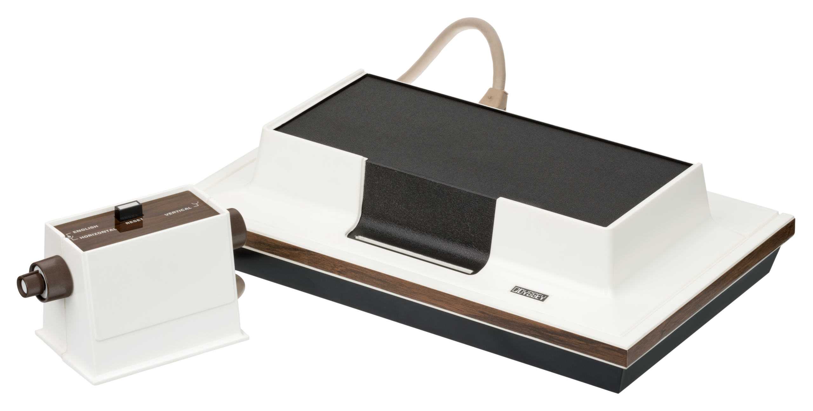
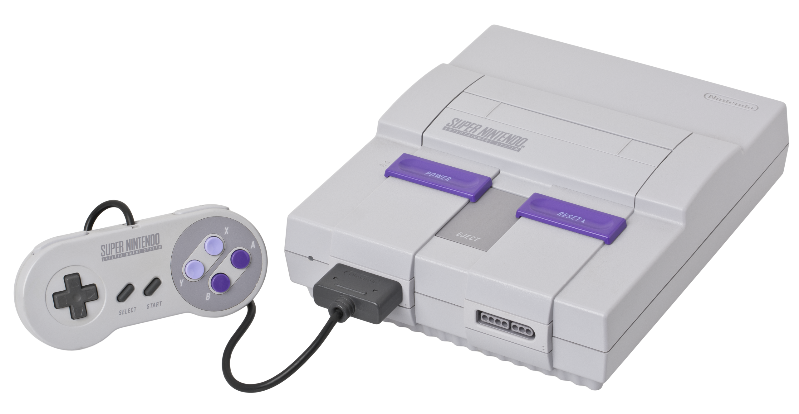
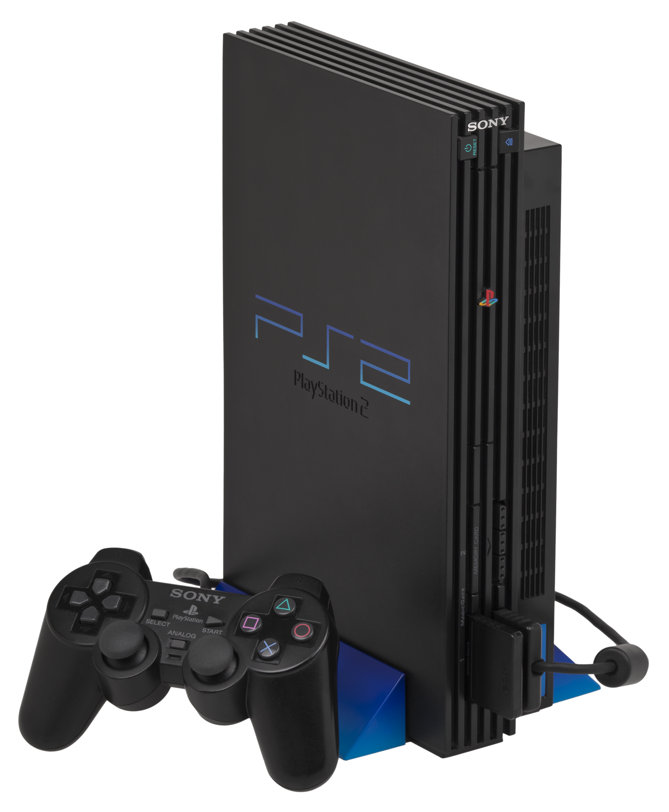

🕹️

Anos 70 – O Início

Magnavox Odyssey e Atari 2600 deram origem à revolução dos jogos eletrônicos.
👾


Anos 80 – A Era Dourada
O NES e o Game Boy marcaram a infância de milhões. Surgem clássicos como Mario, Zelda e Tetris.
💿

Anos 90 – 16 Bits e CD-ROM

Super Nintendo, Mega Drive e PlayStation definiram uma geração de gamers.
🌐

Anos 2000 – O Mundo Online

PlayStation 2, Xbox e Wii conectaram jogadores ao redor do mundo.
🧠


Hoje – Realismo e Inovação
Com PS5 e Xbox Series X, os jogos atingiram níveis impressionantes de realismo.